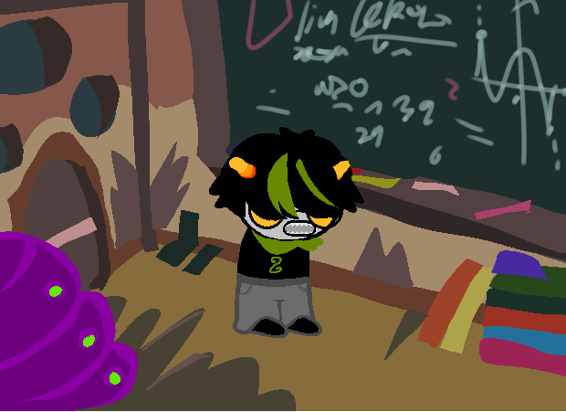

CODE
READ
|
INFO
SHOP
|
GAME
NEWS
|
MORE
이름을 입력하자.

너의 이름은
스카일라 하이포스트(Skylar Hypost)
이다.
너는 유능한 천문학자이자 돼지다.
아 배고파
아니.
너는 난폭하고 사나우며 세상 모든 것을 부정적으로 생각한다.
너는
길쭉한 틸블러드
와 검은 로맨스 관계이며,
좀 더 음침한 남색 공돌이
와도 양다리 검은 로맨스를 맺고 있다.
너의 특기는 수제(정말로?) 위성을 이용한 정신 조종이다.
너의 트롤태그는
NotdullMoonsister/font> 이고,
너는
8..에서 뭔가 하나 빠진 숫자에 집착하는 경향이 있다.
1
당신은 떵개가 되기로 한다.
>
탐정이 되자.
1. 스카일라 타자기벽: ㅓ를 7로